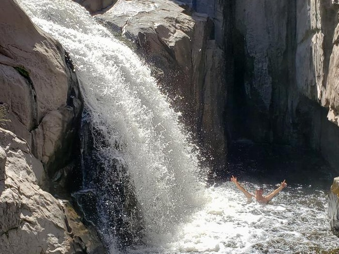

Qué hacer en El Durazno?
Cuando uno busca qué hacer en el paraje "El Durazno", se presentan múltiples opciones para realizar. La clave en este rincón cordobés es el ecoturismo que se disfruta desde distintas experiencias.
Para los amantes de la naturaleza, las caminatas y paseos en bicicleta son ideales para descubrir cada una de las bondades naturales de este lugar. Una opción es llegar hasta las Tres Cascadas, un sitio donde el río Tabaquillo se presenta en un hermoso salto de agua, o recorrer la zona, lugar perfecto para un trekking de media dificultad.
Muchos otros eligen avistar aves y sumarse a los safaris fotográficos en medio de sus bosques. También, uno de los paseos más elegidos para toda la familia son las cabalgatas.
Por último, la pesca deportiva es otra de las actividades favoritas bajo las técnicas de spinning y fly casting.